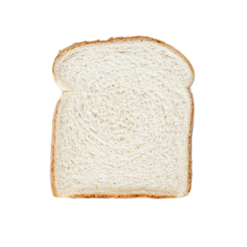

食パン（代表取締役）
サンドイッチやピザトーストなどマルチな業界を経験後、オンリーワンの価値を探し求め、㈱フレンチトーストを設立。

フレンチトーストの作り方を
企業HP風に紹介
「卵と牛乳を混ぜて、
食パンを浸して焼いたら、美味しそう」
なんて、誰が最初に考えたのだろう。
誰もやったことがないから面白い。
未踏の知（地）へ、一歩を踏み出そう。
サンドイッチやピザトーストなどマルチな業界を経験後、オンリーワンの価値を探し求め、㈱フレンチトーストを設立。
マネージャーとして、数々のプロジェクトを成功へと導く。その折衝能力は他の追随を許さない。
給食業界で活躍をしていたが、食パンに出会い同社へ。実力は折り紙付きだが、子供からの人気は両極端。
同社の心臓部と言っても過言ではない。サラダ油で代用しようものなら、まったくの別モノが出来上がる。
何でもそつなくこなす敏腕社員。スイーツ業界からの信頼は厚いが、塩と間違えると大事故を引き起こす。